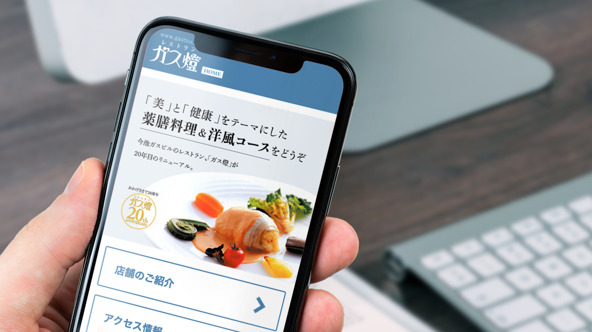

飲食店のWebサイト
デザイン・コーディング練習
Webスクールの課題で、飲食店のWebサイトのTOPページを制作しました。 初めてモバイルサイトのコーディングに取り組んだ作品です。 キービジュアルはカギカッコにカーニングで余裕を持たせることで、高級感を演出しました。
| 制作人数 | 1人 |
|---|---|
| 担当領域 | デザインカンプ・コーディング |
| 制作期間 | 5日間(2019年11月) |
| 制作環境 | Illustrator,Photoshop,XD,Dreamweaver |
| 制作物 | URLはこちら(モバイルサイト対応) |